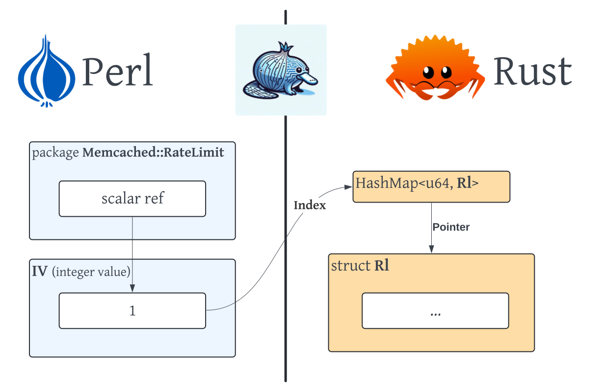

name: initial-layout layout: true <div class="nx-header-flag-1"></div> <div class="nx-header-flag-2"></div> <div class="nx-footer"> <small> <a href="https://alienfile.org/slides/perl-bindings-201">alienfile.org/slides/perl-bindings-201</a> </small> / <a href="https://mastodon.social/@plicease">@plicease@mastodon.social</a> / <a href="https://sched.co/1dGrX">The Perl Conference</a> / 25 June 2024 </div> --- name: title class: center, middle # *Two Big Bindings and a Little Binding* ## Perl Bindings 201 --- template: initial-layout layout: true <div class="nx-header-title">🌻 Perl Bindings 201</div> --- class: nx-hide-bullet <img src="img/plicease.jpg" align="right" width="256" style="margin-top: 20px"> # Graham Ollis * <img src="img/fastly.svg" class="nx-icon"> Software Engineer at <span class="nx-red-link">[Fastly](https://fastly.com)</span> * [@plicease@mastodon.social](https://mastodon.social/@plicease) * [github.com/plicease](https://github.com/plicease) * <img src="img/perl.svg" class="nx-icon"> cpan: [PLICEASE](https://metacpan.org/author/PLICEASE) * [\#native](https://kiwiirc.com/nextclient/#irc://irc.perl.org/#native?nick=mc-guest-?) on [irc.perl.org](http://irc.perl.org) ??? Hi my name is Graham Ollis. I’m known as plicease in most parts of the internet that I frequent. --- # <img src="img/fastly.svg" class="nx-icon"> We're Hiring! * Control Systems * Perl + Go ??? Oh and by the way, I work at Fastly and we are hiring. I mean we are always hiring, but we are specifically hiring for a slot on my elite team of Perl and Go developers. We are control systems and we collaborate with multiple internal Fastly teams to support critical initiatives. We focus on the management, compilation, and validation of customer configuration including propagation of data to the edge. Fastly helps people stay better connected with the things they love. Fastly’s edge cloud platform enables customers to create great digital experiences quickly, securely, and reliably by processing, serving, and securing our customers’ applications as close to their end-users as possible — at the edge of the Internet. The platform is designed to take advantage of the modern internet, to be programmable, and to support agile software development. Fastly’s customers include many of the world’s most prominent companies, including Vimeo, Pinterest, The New York Times, and GitHub. So if you are interested, or have questions, please flag me down while I am here. --- # What are **Bindings**? ??? What are bindings anyway? -- count: false * Wrappers that bridge between two programming languages ??? Wrappers that let you call a library in another language -- count: false # What is **FFI**? ??? What is FFI? If you have ever seen me give a talk before you have probably already heard me ask and answer this question. -- count: false * Better Bindings for Perl ??? Better bindings for Perl. I heard once that the only thing about FFI is easier than XS is the documentation. I'm not a professional technical writter so I think that is a pretty damning admission on the state of XS documentation. -- count: false # What is **FFI::Platypus**? ??? What is Platypus? -- count: false * A framework for using FFI in Perl ??? A framework for using FFI in Perl. The killer feature, I think is the fact that you can attach foreign functions as real Perl subroutines. --- # Ghost of **FFI** *Past* * 2022 Perl Conference talk <a href="https://alienfile.org/slides/newfangled/">NewFangled</a> ??? A couple of years ago I gave a talk about NewRelic bindings … for reasons … called NewFangled. -- count: false * How to use *Alien::Build* and *FFI::Platypus* to write simple Bindings for Perl ??? Beyond the specific application used as an example, it was a talk about how to use Alien and Platypus to write simple bindings for perl -- count: false * "Perl Bindings 101" ??? I think of it as Perl Bindings 101 -- count: false * and there is a <img src="img/youtube.svg" class="nx-icon"> <a href="https://www.youtube.com/watch?v=6o_w-xxjbbg">YouTube video</a>. ??? There is a video on YouTube -- count: false * 2022 Lightning Talk <a href="https://alienfile.org/slides/ffi-stat/">Bundling Code With Platypus</a> (<a href="https://www.youtube.com/watch?v=DiVCXYNxOf8"><img src="img/youtube.svg" class="nx-icon">YouTube</a>) ??? I gave another talk that we can think of as a sort of companion piece which was about bundling foreign code with Platypus. --- # Ghost of **FFI** *Present* * Today is Perl Bindings 201 ??? Today though, is Perl Bindings 201 -- count: false * or *techniques for more challenging bindings* ??? Or techniques for more challenging bindings. But if you weren’t here for Perl Bindings 101 don’t worry, This stuff is interesting with or without that older material. --- # Ghost of **FFI** *Future* * Tomorrow is Perl Bindings 301 ??? Someday maybe someone will give a talk about Perl Bindings 301. Maybe me. -- count: false * Next steps for making bindings easier ??? I like to think this will be the next steps for making bindings even easier. I’m not sure exactly what that will be yet, but I will make some guesses at the end of this talk --- # libarchive ??? Lets start with libarchive -- count: false * *Multi-format archive and compression library* * Read or write any sort of archive compressed any sort of way ??? Which is a multi-format archive and compression library That lets you read or write any sort of archive compressed in any sort of way. -- count: false * Zero copy streamed archive processing ??? One of the neat features is that archives can be processed without a lot of copies -- count: false * Tar implementation for FreeBSD ??? It's basically the tar implementation on FreeBSD as a library. Although I think other BSDs use it now, and you can use it on Linux as well. -- count: false * C library with 100s of functions ??? The big challenge for writing libarchive bindings for Perl is that it is a C library with hundreds of functions. So you don't want to write them all by hand. --- # Archive::Libarchive::FFI * Early attempt to provide "comprehensive" Perl bidings for libarchive using FFI::Raw ??? My first attempt at writing bindings for this library was Archive::Libarchive::FFI -- count: false * Work here informed the development of FFI::Platypus ??? And it gets the job done, but it is not a great set of bindings, And was difficult to maintain, but it was helpful in that the challenges that I had informed the development of Platypus --- # Archive::Libarchive * Modern comprehensive Perl bidings for libarchive using FFI::Platypus ??? More recently I wrote Archive::Libarchive (I dropped the unnecessary ::FFI suffix) This is a comprehensive bindings for libarchive using Platypus -- count: false * Bindings are largely generated from C header files ??? The bindings are mostly generated from the C header files that come with libarchive I did this because there are hundreds of functions, and doing them all manually would be tedious. But more importantly error prone. --- # Code comprehension * CastXML ??? In order to do that I need to programmatically be able to understand C code, which is no easy task. CastXML is a utility that reads in a header file and spits out an Abstract Syntax Tree (or AST) of the interfaces in XML format -- count: false * C Pre-processor (via Const::Introspect::C) ??? I also use the C pre-processor to compute the value of macro constants since those are lost in the AST I wrote a Perl module to do this because computing some constants can be non-trivial -- count: false # Code generation * Template Toolkit ??? Then I generate Perl code using a template I’m not going to show you the code that does all of this because it isn’t pretty, but I will talk later about how we might be able to improve that situation. --- # Zero copy read (C) ```C /* * A zero-copy version of archive_read_data that also exposes the file offset * of each returned block. Note that the client has no way to specify * the desired size of the block. The API does guarantee that offsets will * be strictly increasing and that returned blocks will not overlap. */ __LA_DECL int archive_read_data_block(struct archive *a, const void **buff, size_t *size, la_int64_t *offset); ``` ??? A lot of the functions cannot be generated easily automatically because the C ABI is ambiguous. This function for example returns a region of memory or buffer from libarchive in the form of a pointer, a size and an offset. --- # Zero copy read (Perl) ```perl use FFI::Platypus::Buffer qw( window ); $ffi->attach( # Name of Method [archive_read_data_block => 'read_data_block' ], # C Arguments ['archive_read', 'opaque*', 'size_t*', 'sint64*'], # C Return Type 'int', # Perl wrapper sub ($xsub, $self, $buffer, $offset) { my $ret = $xsub->($self, \my $ptr, \my $size, $offset); window $$buffer, $ptr, $size if defined $ptr; return $ret; } ); ``` ??? libarchive went to a lot of effort not to do a bunch of copies. so it would be nice not to have to copy this data in order to get access to the result. Thankfully the Platypus buffer module has a window function that gives you a read-only window into a region of memory in the form of a scalar. -- count: false ```perl my $int = $r->read_data_block(\$buffer, \$offset); ``` ??? Now we can call the new method. --- # Zero copy write (C) ```C __LA_DECL la_ssize_t archive_write_data(struct archive *, const void *, size_t); ``` ??? libarchive does the same thing with writes. --- # Zero copy write (Perl) ```perl use FFI::Platypus::Buffer qw( scalar_to_buffer ); $ffi->attach( # Name of Method [ archive_write_data => 'write_data' ], # C Arguments ['archive_write', 'opaque', 'size_t'], # C Return Type 'ssize_t', # Perl wrapper sub ($xsub, $self, $buffer) { $xsub->($self, scalar_to_buffer($$buffer)); }); ``` ??? And we can do the same zero-copy shenanigans from Perl into C with the scalar to buffer function ```C my $size = $w->write_data(\$buffer); ``` ??? And now we can use the method without having to know anything about how it works. --- # libcurl * Needs no introduction * Command line and c-library user agent ??? libcurl is going to be our second of two big bindings. And really I think curl doesn't need an introduction. But curl is a command line and c-library user agent. -- count: false * 100s of constants ??? It doesn't have as many functions as libarchive, but it has hundreds of constants. -- count: false * heavy use of variadic functions ??? It uses these constants with variadic functions to implement a lot of different functionality --- # Code comprehension * CastXML * C Pre-processor (via Const::Introspect::C) # Code generation * Template Toolkit ??? When I was writing my curl bindings, I used the same technique as with libarchive That is to say CastXML, the C pre-processor and a template. But I couldn't re-use any of the code that I had written for libarchive because the interface style is so fundamentally different. --- # Variadic function (C) ```C CURL_EXTERN CURLSHcode curl_share_setopt(CURLSH *, CURLSHoption option, ...); ``` ??? A variadic function is a funny C thing where you can pass in a variable number of arguments using this dot dot dot notation. --- # Variadic function (Perl) ```perl $ffi->attach( [printf => 'printf_int'] => ['string'] => ['int'] ); $ffi->attach( [printf => 'printf_string'] => ['string'] => ['string'] ); printf_int("the answer = %d\n", 42); printf_string("hello %s\n", "world"); ``` ??? Platypus since version 1 has supported variadic functions using this two array notation. This first array reference is the fixed arguments, of which there must be at least one. The second array reference is the variable arguments. Unfortunately if you want to attach such a method, you have to attach one for each variable argument signature. --- # Variadic function (Perl, dynamic) ```perl $ffi->function( [printf => 'printf_int'] => ['string'] => ['int'] ) ->call(the answer = %d\n", 42); $ffi->function( [printf => 'printf_string'] => ['string'] => ['string'] ) ->call("hello %s\n", "world"); ``` ??? Which is why sometimes you don't want to attach these sort of functions, and instead dynamically crate a function object which you call and then throw away. at the cost of some performance. --- # Variadic function (Perl, calling libcurl) ```perl # Generated our %opt = ( abstract_unix_socket => [ 10264, \&_setopt_stringpoint ], accept_encoding => [ 10102, \&_setopt_stringpoint ], accepttimeout_ms => [ 212, \&_setopt_long ], address_scope => [ 171, \&_setopt_long ], altsvc => [ 10287, \&_setopt_stringpoint ], ... ); # Not Generated $ffi->attach( [setopt => '_setopt_stringpoint' ] => ['CURL','enum'] => ['string'] => 'enum' ); $ffi->attach( [setopt => '_setopt_long' ] => ['CURL','enum'] => ['long' ] => 'enum' ); $ffi->attach( [setopt => '_setopt_off_t' ] => ['CURL','enum'] => ['off_t' ] => 'enum' ); $ffi->attach( [setopt => '_setopt_opaque' ] => ['CURL','enum'] => ['opaque'] => 'enum' ); $ffi->attach( [setopt => '_setopt_FILE' ] => ['CURL','enum'] => ['FILE' ] => 'enum' ); ... sub setopt ($self, $key, $value) { my($key_id, $xsub, $data_id) = $opt{$key}->@*; $xsub->($self, $key_id, $value, $data_id ? ($data_id) : ()); } ``` ??? For curl though, there are actually a small subset of variadic signatures, so I attached type specific variants of the varaidic set opt function here and wrote a Pure perl sub that dispatches to the correct xsub based on the option enum. Note the opt hash is generated, so I don't have to hand code any of that. The key in the hash is the lower case version of the C constant, and we accept that string when calling setopt, so you don't have to import hundreds of numeric constants. --- class: center, middle # Project Echidna ??? Lets talk a little bit about code generation. I've been thinking about a compainion tool for Platypus, to generate Perl bindings from a C header file, privately have been calling this Echidna, as that is the Platypus closest living relative, My idea is to have input libraries that can introspect things about the foreign language, That feed into a intermediate model Here is where you might be able to deal with some of the ambiguities in C, by providing an API to the intermediate model, you can adjust the guesses the introspection does wrong, Then once you have the intermediate model you can generate your code, and if you do it right, it doesn't have to be for Platypus, it could be for Raku or XS even. I've had a couple of false starts, usually when I try to conceptualize the model, and I am starting to realize that I don't have the bandwidth for this at the moment, but maybe someone else can take Project Echidna and run with it. --- <img src="img/llvm.png" width="200" align="right"> # llvm + libclang / CastXML * libclang is a library and object model for th C programming language ??? Lets talk a little more about C code introspection for a minute though. libclang is this library that you can feed some C code, and it will give you an AST. Unfortunately whomever wrote libclang, they didn't consider that someone might want to use it to write bindings for any langauge other than C++ I try not to be judgy, but the interface is pretty ugly. -- count: false * CastXML loads the "interface" parts of a C header file and generates XML ??? Fortunately someone wrote CastXML, which uses libclang to generate the AST of just the interface stuff (not the function bodies) and output XML. --- # Const::Introspect::C * Parse a C header file for C-Pre processor constants ```C /* libclang / CastXML can understand this: */ enum { FOO, BAR }; /* libclang / CastXML doesn't know about this: */ #define FOO 1 ``` ??? Unfortunately the c pre-processor is a thing. And libclang and CastXML know nothing about it because the c pre-processor runs before the C code is parsed. So I wrote Const::Introspec::C which does some magic to extract the values of constants from a header file. --- # C ABI is ambiguous ```c void f(char *x); ``` * string? * pointer to a buffer? * array of bytes? * return 1 byte? ??? Also unfortunate is that the C ABI is quite ambiguous. Here we have an example of a C function that takes a pointer to an 8 bit byte. But we don't really know if this is intended to be a string, an array of bytes, or maybe this function returns a 8 bit value by filling in the memory that you pass in! Without looking at the documentation or reading the source code it is impossible to know fore sure. And likely you need a human to judge that. All of these things make a generic bindings generator for C quite difficult. --- # Memcached::RateLimit * Perl memcached client specifically for rate limiting ??? Now lets look at our little binding. For work I needed a rate limiter that used memcached to track client usage -- count: false * Implemented in <img src="img/perl.svg" class="nx-icon-small">Perl + Rust via FFI ??? So I wrote this thing using Platypus and Rust. --- # Why Rust? * Perl has many good memcached clients * None at the time supported TLS * crates.io has a memcached client * Rust has better memory safety that C or XS ??? Why write a new module, there are a bunch of very mature Perl memcached clients Unfortunately, at least when I was working on this, none of them supported TLS connections. And for security reasons encrypted connections were a hard requirement. crates dot io, which is Rust's CPAN, had a memcached client that supports TLS Also important is that Rust has better memory safety than C, making it easier to review and get out to production. --- # How Rust? * FFI::Platypus has a <a href="https://metacpan.org/pod/FFI::Platypus::Lang::Rust">Rust plugin</a> ```rust #![crate_type = "cdylib"] #[no_mangle] pub extern "C" fn add(a: i32, b: i32) -> i32 { a + b } ``` ```perl use FFI::Platypus 2.00; my $ffi = FFI::Platypus->new( api => 2, lang => 'Rust', lib => 'add.so' ); $ffi->attach( add => ['i32', 'i32'] => 'i32' ); print add(1,2), "\n"; # prints 3 ``` ??? Platypus has a Rust plugin, which lets you use the native Rust types. This is a very simple example of a Rust function that adds two numbers and how you can call it from Perl using Platypus. Honestly I get tired of seeing examples like this for FFI in other languages, because who care, you never need to do this. --- # Objects in Rust ```rust struct Person { name: String, lucky_number: i32, } impl Person { fn new(name: &str, lucky_number: i32) -> Person { Person { name: String::from(name), lucky_number: lucky_number, } } fn get_name(&self) -> String { String::from(&self.name) } fn set_name(&mut self, new: &str) { self.name = new.to_string(); } fn get_lucky_number(&self) -> i32 { self.lucky_number } } ``` ??? More likely, you need to interact with some sort of object in another language. Here we have a Rust Perlson struct with some methods that you can call on it. --- # Objects in Rust, Constructor ```rust type CPerson = c_void; #[no_mangle] pub extern "C" fn person_new( _class: *const c_char, name: *const c_char, lucky_number: i32, ) -> *mut CPerson { let name = unsafe { CStr::from_ptr(name) }; let name = name.to_string_lossy().into_owned(); Box::into_raw(Box::new(Person::new(&name, lucky_number))) as *mut CPerson } ``` ??? Rust doesn't have a stable ABI though, so you can't directly call rust functions. But you can use the C ABI, which is the lingua franca of ABIs In that fewer new projects are using C, but C has been around forever so every programming language needs to speak it. Even if two languages need to talk to each other when neither are C. Here we take in the person's name as a string, and create a Person object which we convert into a raw pointer The Rust code no longer owns that pointer so it won't free or "drop" it, as it normally would when it falls out of scope. Don't worry we will free it later. --- # Objects in Rust, Accessor ```rust #[no_mangle] pub extern "C" fn person_lucky_number(p: *mut CPerson) -> i32 { let p = unsafe { &*(p as *mut Person) }; p.get_lucky_number() } ``` ??? Unfortunately every time we pass that pointer back into Rust from Perl we have to cast it from a raw pointer. In Rust this is considered unsafe. C would be like whatever, but Rust cares. This is a wrapper around one of the accessor methods that I wrote for the struct. --- # Objects in Rust, Destructor ```rust #[allow(non_snake_case)] #[no_mangle] pub extern "C" fn person_DESTROY(p: *mut CPerson) { unsafe { Box::from_raw(p as *mut Person) }; } ``` ??? Now when we are done with the object we pass it back into Rust and convert it back into a Person struct. Where is the free or "drop"? Well you can explicitly drop an object in Rust, but you don't need to it will drop as soon as the struct falls out of scope. Interestingly if you go into the Rust standard library and find the implementation of drop it is just a function that doesn't do anything. Exactly like we did here, once the drop function takes ownership and it falls out of scope the memory can be reclaimed. --- # <img src="img/perl.svg" class="nx-icon"> Wrapping Rust in Perl ```perl package Person { use FFI::Platypus 2.00; my $ffi = FFI::Platypus->new( api => 2, lang => 'Rust' ); $ffi->bundle; # prefix all symbol lookups with person_ $ffi->mangler(sub ($symbol) { "person_$symbol" }); $ffi->type( 'object(Person)' => 'person_t' ); $ffi->attach( new => [ 'string', 'string', 'i32' ] => 'person_t' ); $ffi->attach( name => [ 'person_t' ] => 'string' ); $ffi->attach( rename => [ 'person_t', 'string' ] ); $ffi->attach( lucky_number => [ 'person_t' ] => 'i32' ); $ffi->attach( DESTROY => [ 'person_t' ] ); } ``` ??? Writing the bindings for the Person is now trivial because we chose sensible names for our wrapper functions, and Platypus allows you to create a type alias which is just a blessed refrence to an opaque type. --- # Perl/Rust Objects <center></center> ??? I think it is helpful to diagram this to understand how it works. What we call an opaque type in Platypus is just an integer value which is actually a pointer to a memory location. When you bless a reference to an opaque scalar like this you get the Platypus "object" type --- # Safer Objects in Rust ```rust struct Rl { // ... } impl Rl { fn new(url: &CStr) -> Result<Rl> { // ... } fn rate_limit( &mut self, prefix: &CStr, size: u32, rate_max: u32, rate_seconds: u32, ) -> Result<bool> { // ... } } ``` ??? We can make it safer though. For my rate limiter module I have an object that stores a bunch of things, like the location of the memcached server. but we can treat this as an opaque type and not worry about what the internal representation looks like. --- # Safer Objects in Rust, Constructor ```rust // keep a hash map in thread local storage // of the Rl objects thread_local!( static COUNTER: Cell<u64> = Cell::new(1); static STORE: RefCell<HashMap<u64, Rl>> = RefCell::new(HashMap::new()) ); #[no_mangle] pub extern "C" fn rl_new(url: *const i8) -> u64 { let url = unsafe { CStr::from_ptr(url) }; let rl = match Rl::new(url) { Ok(rl) => rl, Err(_) => return 0, }; let index = COUNTER.with(|it| { let index = it.get(); it.set(index + 1); index }); STORE.with(|it| { let mut it = it.borrow_mut(); it.insert(index, rl); }); index } ``` ??? In fact we can avoid even passing a pointer into Perl space. Here is the wrapper which will eventually become the constructor for our Perl class. And instead of returning the pointer we store it in a hash map (that is like a hash reference) indexed on an integer handle. If you are familiar with how file handles work in C, this is the same idea. Now the only thing that is unsafe is the strng that represents the URL of the memcached server. For now at least that is sort of unavoidable. --- # Safer Objects in Rust, Method ```rust #[no_mangle] pub extern "C" fn rl__rate_limit( index: u64, prefix: *const i8, size: u32, rate_max: u32, rate_seconds: u32, ) -> i32 { let prefix = unsafe { CStr::from_ptr(prefix) }; STORE.with(|it| { return match it.borrow_mut().get_mut(&index) { Some(rl) => match rl.rate_limit(prefix, size, rate_max, rate_seconds) { Ok(true) => 1, Ok(false) => 0, Err(e) => { if let Ok(error) = CString::new(e.to_string()) { rl.error = error; } rl.client = None; -1 } }, None => -1, }; }) } ``` ??? Now when we need to call the rate limit method we take that same integer handler and fetch the actual Rl struct from the Hash Map This functon is a little messy because we have to deal with errors, and normally you'd do that with an enum but we can't natively use those from Perl At least not yet. --- # Safer Objects in Rust, Destructor ```rust #[no_mangle] pub extern "C" fn rl_DESTROY(index: u64) { STORE.with(|it| { it.borrow_mut().remove(&index); }) } ``` ??? For the destructor we explicitly remove the index handle from the Hash Map, This will have the effect of dropping the Rl for that index. --- # <img src="img/perl.svg" class="nx-icon"> Wrapping Safer Objects in Perl ```perl $ffi->mangler(sub ($symbol) { "rl_$symbol" }); $ffi->type("object(Memcached::RateLimit,u64)" => 'rl'); $ffi->attach( new => ['string'] => 'u64' => sub ($xsub, $class, $url) { my $index = $xsub->($url); return bless \$index, $class; }); $ffi->attach( _rate_limit => ['rl','string','u32','u32','u32'] => 'i32' ); $ffi->attach( DESTROY => ['rl'] ); ``` ??? Now the Perl code is pretty brief. When we are creating the type alias for Memcached::RateLimit we specify the underlying implemtation type as u64 instead of opaque. And there is some monkey business getting the index from the constructor wrapper, and blessing it. --- # Safer Using Rust from Perl ```perl use Memcached::RateLimit; my $rl = Memcached::RateLimit->new("memcache://localhost:11211"); # allow 30 requests per minute if($rl->rate_limit("resource", 1, 30, 60)) { # rate limit exceeded } ``` ??? And finally we can create a rate limit object and rate limit requests as though it were just a regular Perl object And really it is just a reagular Perl object, You shouldn't be thinking too much about the implementation. --- # Safer Perl/Rust Objects <center></center> ??? Again, I think a diagram is helpful. The class is still represented in Perl as a reference to an integer value But we don't have or need a pointer to where the Rust implementation is stored. And Rust is happier because there is less unsafe happening, At least from its perspective. --- # Dependencies Via Cargo ```toml [package] name = "rl" version = "0.1.0" edition = "2021" [lib] crate-type = ["cdylib"] [dependencies] memcache = "0.17.0" anyhow = "1.0.65" ``` ??? A cool thing about writing Perl bindings using rust is the cargo ecosystem Which lets you define dependenices on other rust crates and it all just works. A crate is in Rust what we would call a distribution in Perl. This is the cargo dot toml file for my rate limiter module. --- # Patching Via Cargo ```toml [package] name = "rl" version = "0.1.0" edition = "2021" [lib] crate-type = ["cdylib"] [dependencies] memcache = "0.16.0" anyhow = "1.0.65" [patch.crates-io.memcache] # https://github.com/aisk/rust-memcache/pull/135 git = 'https://github.com/plicease-pr/rust-memcache' branch = 'graham/fractional-timeout' ``` ??? When I was working on my bindings for this project I ran into a problem, which was the timeout on a bad connection was five minutes Which would have been disasterous had we deployed this to production, and the memcached server disappeared for any length of time. Using the cargo dot toml file I was able to specify an alternate branch, While I was waiting for the upstream project to merge my PR, and everything else just worked. This is a lot harder to do in Perl, I think you can do it with cpan plus and distro prefs, But we don't use any of that. --- class: center, middle # Project Echidna ??? I didn't use any code generation for this little binding because there were only a handfull of functions But in our theoretical Project Echidna we could use the Rust syn crate to do everything that Const::Introspect::C and CastXML does. Only better because it wouldn't be ambiguous in the way C is. --- class: center, middle # Perl Bindings 301 ??? What does the future hold? What would a hypothetical Bindings 301 look like? Well I do have some thoughts. --- # Perl Bindings 301: MySQL client bindings * Rust::mysql * DBD::rust_mysql ??? Entirely by coincidence, friend and co-worker Dylan Hardison the other day started working on a new MySQL database driver for DBI Because he was fed up with the state of transactions in the existing MySQL database drivers. Dylan once confided in me that he didn't want to become the "database" guy at work, But this is a thing that he chose to do (smile) --- # Perl Bindings 301: plbindgen * Automatically generate Platypus bindings from Rust code ??? Anyway he rightly didn't want to write the Platypus bindings by hand and so has started working on a new project that he called plbindgen To automatically generate Platypus bindings. The name is a play on cbindgen which is the Rust tool that generates the C header files that helps call rust from C or C++ The P L stands for both Perl and Platypus -- count: false * "basically a h2xs for rust that you will probably enjoy using a lot more than h2xs" - Dylan Hardison ??? Dylan describes it in his README as h2xs for rust that you will probably enjoy using a lot more than h2xs. That quote made me laugh and Dylan specifically asked me to credit him when he was reviewing my slides because he thought that would be funny --- # Perl Bindings 301: plbindgen ```rust use plbindgen_macros::export; #[export] pub fn add(a: i32, b: i32) -> i32 { a + b } ``` ??? So lets do a very simple example. And here is the example that I just told you that I hate because nobody ever needs to do it for real But I promise you that plbindgen supports a more useful types, like records and opaque types plbindgen has a companion crates plbindgen_macros that lets you annotate your rust code so that plbindgen can generate appropriate bindings The export maco makes sure the function is public, turns off name mangling and uses the C ABI There are other macros for opaques and record. None of these annotations are all that intrusive, and in fact make the code much easier to read. -- count: false ``` % plbindgen --name Foo::Bar ``` ??? Now that we have our annotations in place we can run plbindgen --- # Perl Bindings 301: Generated code ```perl package Foo::Bar; use FFI::Platypus 2.00; use FFI::CheckLib qw( find_lib_or_die ); use Exporter qw( import ); our @EXPORT = qw( ); our %EXPORT_TAGS = ( all => \@EXPORT ); our $VERSION = '0.1.0'; my $ffi = FFI::Platypus->new( api => 2, lang => 'Rust' ); $ffi->bundle; $ffi->attach( add => ['i32', 'i32'] => 'i32' ); push @{ $EXPORT_TAGS{all} }, 'add'; 1; ``` ??? And this is the Platypusm bindings that it generates. --- class: center, middle # Perl Bindings 301: Nested data ??? One place that FFI can be quite slow compared with XS is if you have nested data structures For example if you are writing a JSON desearealizer where a lot of objects have to be created on the Perl side --- class: center, middle # Perl Bindings 301: Serde ??? One thing that might even the odds though is Serde Rust has a neat crate for searalizing and desearalizing data called Serde. Serde is extremely flexible and you can plugin different formats on either side. One of those "formats" could be Perl data structures. So you could in theory directly convert nested rust data structures into Perl data structures And back With the right macros and tools it could in theory be pretty easy You could also pretty easily use this technique to support serialization of any of the many formats in the Rust ecosystem that use Serde. There are some big challenges, like linking the Rust code back to the correct Perl runtime. Also calling the Perl API, which is implemented using a lot of C Macros, from Rust. But this is the dream. And it would be quite fast. --- # Perl Bindings 301: Beyond the C ABI * C ABI is the lingua franca of computer languages ??? For better and mostly worse, the C ABI is the lingua franca of computer languages It has been around since the 60s or 70s. And it has served us pretty well given its age. -- count: false * Is not memory safe ??? But there are some serious challenges, like it is not memory safe -- count: false * Is ambiguous ??? As I have mentioned here a couple of times it is ambiguous Which for writing bindings, and espeically automatically generating bindings, means a lot of guess work, and probably a fair amount of human intervention which is a thing thaat we should try to avoid. --- # Perl Bindings 301: Rust ABI * Default ABI is not stable ??? Rust doesn't have a stable ABI by default. Meaning from version to version you can't count on a particular calling convention. This is a strategy that most modern compiled languagess use I think to give them the flexibility to optimize function calls Without having to commit to a particular calling convention. And Rust uses the C ABI when it needs to talk to another language, -- count: false * Rust experimental feature `crabi` ??? There is talk in the Rust community about implementing an optional stable ABI Which could be used by other languages, or binaries compiled by different versions of Rust to talk to each other -- count: false * *Would* be memory safe ??? And it would be memory safe -- count: false * *would* not be ambiguous ??? And it wouldn't be ambiguous -- count: false * *might* allow for Rust native usage at the FFI boundary ??? And it might even allow us to use native Rust types like enumerated types across the FFI boundary. --- # Perl Bindings 301: WebAssembly * memory-safe, sandboxed execution environment ??? I also want to briefly mention WebAssembly, As a safe way to write bindings for Perl WebAssembly is very cool, we use it at fastly, and I have even dabbled with using it from Perl -- count: false * Native deps a pain? WebAssembly can help! - Gavin Hayes ??? Gavin Hayes is giving a talk on Thursday on the subject So if you are interested in that you should check that out. --- name: questions class: nx-hide-bullet <img src="img/question.png" align="right" width="256"> # Questions * <a href="https://alienfile.org/slides/perl-bindings-201">alienfile.org/slides/perl-bindings-201</a> * [\#native](https://kiwiirc.com/nextclient/#irc://irc.perl.org/#native?nick=mc-guest-?) on [irc.perl.org](http://irc.perl.org) * [github.com/PerlFFI](https://github.com/PerlFFI) * [@plicease@mastodon.social](https://mastodon.social/@plicease) * [@PerlFFI@fosstodon.org](https://fosstodon.org/@PerlFFI) ??? Thank you for coming to my talk. I'm plicease on the Internets in the places that I frequent. There is also a PerlFFI mastodon account that I use to periodically post or repost things about FFI There is also a PerlFFI org on GitHub that hosts a number of Platypus related projects, including Dylan's new plbindgen And respond to questions on the #native channel on Perl's IRC server. Does anyone have any questions. **Remember to repeat the questions!**